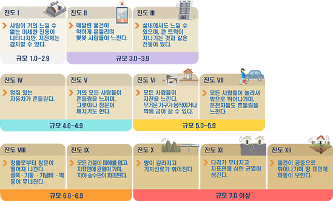

규모는 절대적 개념이고, 진도는 상대적 개념입니다.
- 규모(Magnitude)
- 발생한 지진에너지의 크기를 나타내는 단위로서 특정 장소와 관계없는 절대적인 개념이기 때문에 하나의 지진에 대한 규모는 동일수치이며, 표현 시 소수 첫째 자리까지 나타냅니다.
(예: M5.8) 일반적으로 규모가 1.0씩 상승할 때마다 에너지는 30배 이상 차이 난다고 알려져 있습니다.
- 진도(Intensity)
- 지진의 세기에 따라 사람의 느낌이나 주변의 물체 또는 구조물의 흔들림 정도를 수치로 표현한 상대적인 개념이며 지진의 진앙거리, 진원깊이에 따라 달라질 수
있습니다.
진도우리나라 진도표기는 수정 머켈리 진도(MMI)를 사용하고 있으며, 표현 시 로마 숫자를 사용하여 나타냅니다. (예: 진도 Ⅴ)


진원은 처음 지진이 발생한 땅 속 지점입니다.
- 진원(Hypocenter)
- 지진을 일으키며 에너지가 처음 방출된 지점, 일반적으로 지진발생 시 암석의 파괴는 한 점에서 발생하는 것이 아니라, 지진의 크기에 따라 수 km, 수백 km에 달하므로 지진은
일정한 영역에서 일어나며, 이 영역을 진원역이라고 합니다. 진원은 진원역 중에서 최초로 지진파가 발생된 지점으로 반드시 진원역의 중심에 해당하는 것은 아닙니다. 진원은 진앙의
정보에 진원깊이를 더하여 나타납니다.
진앙은 진원에서 연직으로 지표면과 만나는 지점입니다.
- 진앙(Epicenter)
- 원에서 연직으로 지표면과 만나는 지점, 각각의 지진관측소(적어도 3개 이상)에 도달한 P파와 S파의 도착시간 차이(PS시)를 가지고 진원까지 거리를 계산한 후, 각각의 관측소를
중심으로 하고, 진원거리를 반지름으로 하는 동심원을 그려 이 원들의 공동 현의 교점으로 추정합니다. (출처: 한국지질자원연구원)